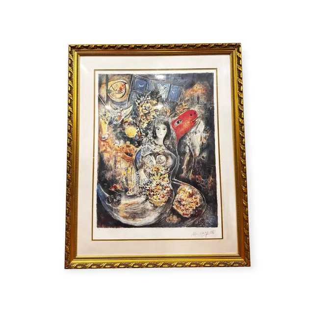
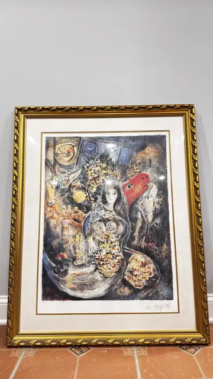
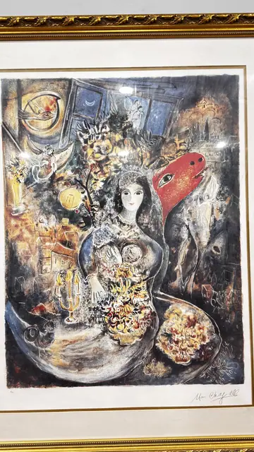
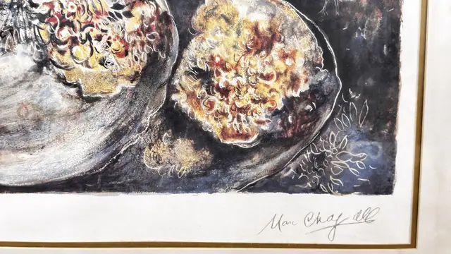
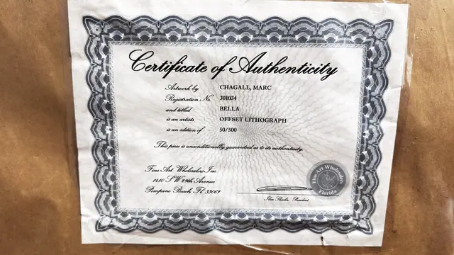

Paintings & Prints
Chagall Bella Offset Lithograph 50/500, CHAGALL, MARC, Numbered Edition, Framed
Marc Chagall · late 20th century
Price Upon Request





About the Item
CHAGALL, MARC. A pale, dreaming female figure stands centrally holding a great bouquet of cream and gold flowers, her head tilted against a blue-black night window. To the right a flat scarlet animal head and a dark horse shape push into the picture, while at the left a clock face and a candelabra glimmer out of a warm brown ground. Below her, two shallow bowls heaped with gold and russet blossom close the composition. The sheet has full margins on a cream mat with a gold fillet, in a heavily carved and gilded frame under glass. Medium: offset lithograph on paper. Signed lower right of the sheet, reading "Marc Chagall". Edition: 50/500. Accompanied by a certificate: Certificate of Authenticity: Artwork by CHAGALL, MARC; Registration No. 301034; titled BELLA; is an artists OFFSET LITHOGRAPH; is an edition of 50/500; 'This piece is unconditionally guaranteed as to its authenticity.' Fine Art Wholesalers Inc., 1410 S W 39th Avenue, Pompano Beach, Fl 33069, signed by the President. Inscribed on the reverse or mount: Marc Chagall (lower right of the sheet). Condition: Certificate is creased and lightly toned. Print clean; strong glass glare in the straight-on views. The title refers to Bella Rosenfeld, Chagall's first wife, whom he married in Vitebsk in 1915 and who remained his defining muse, appearing throughout his images of lovers even after her death in 1944.
About the Artist
Marc Chagall (1887-1985) was a Russian-French modernist celebrated for dreamlike scenes of lovers, villages and bouquets in saturated colour. His work spans painting, stained glass and a vast printmaking output, and hangs in major museums worldwide.
Details
- Creator:
- Marc Chagall
- Creation Year:
- late 20th century
- Dimensions:
- Height: 42.3 in (107.44 cm)
Width: 33.9 in (86.11 cm)
outside of frame - Medium:
- offset lithograph on paper
- Edition:
- 50/500
- Period:
- 20Th
- Condition:
- Offered in the condition shown in the photographs.
- Reference Number:
- VO-269
- Documentation:
- Certificate of Authenticity: Artwork by CHAGALL, MARC; Registration No. 301034; titled BELLA; is an artists OFFSET LITHOGRAPH; is an edition of 50/500; 'This piece is unconditionally guaranteed as to its authenticity.' Fine Art Wholesalers Inc., 1410 S W 39th Avenue, Pompano Beach, Fl 33069, signed by the President.
- Gallery Location:
- Fine Art Wholesalers Inc.